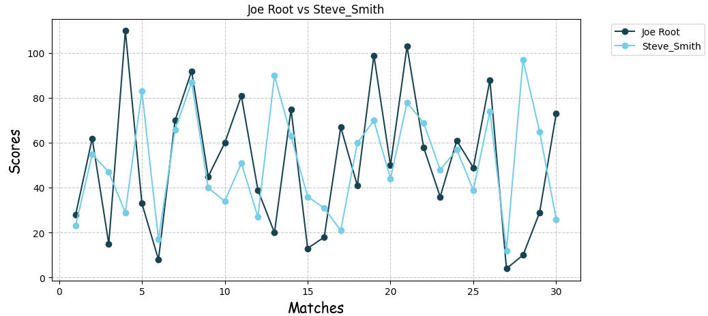

Visualizing with Multiple Line Graphs in Matplotlib
Line graphs are a go-to for showing trends over time — but what if you have more than one set of data to compare? That’s where multiple line graphs come in. In this tutorial, we’ll walk you through how to create and customize multiple lines on a single graph using Python’s Matplotlib library.
Why Use Multiple Line Graphs?
Multiple line graphs are perfect when you want to compare different data series over the same time period or sequence. For example, you might want to track the temperature in several cities, compare website traffic across different sources, or see how various stocks are performing. Displaying them on the same graph makes it easier to spot patterns, differences, and trends.
Step-by-Step Code Example
Here’s a simple example of how to create a multiple line graph in Matplotlib:
import matplotlib.pyplot as plt
import numpy as np
jaiswal = np.array([28, 62, 15, 110, 33, 8, 70, 92, 45, 60,
81, 39, 20, 75, 13, 18, 67, 41, 99, 50,
103, 58, 36, 61, 49, 88, 4, 10, 29, 73])
abhishek = np.array([23, 55, 47, 29, 83, 17, 66, 87, 40, 34,
51, 27, 90, 63, 36, 31, 21, 60, 70, 44,
78, 69, 48, 57, 39, 74, 12, 97, 65, 26])
plt.figure(figsize = (10, 5))
x = np.arange(1, 31)
plt.plot(x, jaiswal, label = 'Jaiswal',color = '#184452', marker = 'o')
plt.plot(x, abhishek, label = 'Abhishek', color = '#77cce6', marker = 'o')
plt.title('Jaiswal vs Abhishek')
plt.xlabel('Matches', fontdict = {'fontname' : 'Comic Sans MS', 'fontsize' : 15})
plt.ylabel('Scores', fontdict = {'fontname' : 'Comic Sans MS', 'fontsize' : 15})
plt.legend(bbox_to_anchor=(1.05, 1), loc='upper left')
plt.grid(True, alpha = 0.7, linestyle = '--')
plt.show()
We've taken two arrays named Abhishek and Jaiswal, which contain the scores of these two players (don’t take it too seriously — it’s just dummy data).
Points to be noted :
- This dataset contains the results of 30 matches, which is why we've defined x as x = np.arange(1, 31).
- First, we plotted Jaiswal's data, followed by Abhishek's data.
- We've used two different colors to clearly distinguish between the lines.
- Next, we customized the graph by adding a title, x-label, and y-label.
- plt.legend() is important for showing labels on the graph.
- We further customized the legend by setting the position of the label box using bbox_to_anchor=(1.05, 1) and loc='upper left'.
- And at last, we have added the grid because it looks beautiful.
Here's the output :

Ommo, this looks so cool!
More educational content :